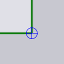
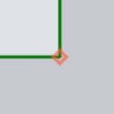

코너 처리

코너 처리 패널은 레이저 절단부의 날카로운 코너에서 다양한 타입의 특수 처리를 하는 데 사용됩니다. 이 패널은 레이저 절단부의 코너 근처를 클릭하여 액세스됩니다.
-
자동 계산: 자동 계산 설정이 켜져 있을 때(기본값) TecZone Laser는 기계, 사용 중인 LTT 및 코너에서의 각도에 따라에 적절한 코너 처리를 계산합니다. 코너 처리를 편집하려는 경우, 이 기능을 꺼야 합니다.
-
표면 처리: 코너 처리 타입(자세한 내용은 아래 테이블 참조). 처리 방법 중 일부에는 파라미터가 있습니다(예: 코너 가공을 제어하는 데 사용되는 반경 또는 시간).
-
반경 또는 시간(초): 일부 처리(예 라운딩 및 곡선 궤적)에는 입력값으로 반경이 필요합니다. 일부는 처리에는 드웰 및 냉각 지연시간이 필요합니다.
-
이 패널 하단의 *선택기*를 사용하면 코너 세트를 확장하여 모두 함께 편집할 수 있습니다:
-
이 컨투어에서 유사: 이를 클릭하면 선택한 컨투어와 유사한 각도를 갖는 이 컨투어의 모든 코너는 작은 파란색 크로스로 강조표시됩니다. 그러면, 하려고 하는 편집 내용이 이 코너 모두에 적용됩니다.[1]
-
이 컨투어에서 모두: 위의 선택기처럼, 각도에 관계없이 이 컨투어에서 _모든 코너_를 선택합니다.
-
모든 컨투어에서 유사: 파트의 툴링 완료된 모든 컨투어에서 유사한 모든 코너(동일한 각도)를 선택하면 모두 동시에 편집할 수 있습니다.
-
처리 방법
아래 테이블은 다양한 코너 처리 방법을 보여줍니다. 이 라운딩 및 곡선 궤적 방법은 절단부의 형상을 눈에 띄게 바꾸는 반면, 다른 방법은 코너에 작은 아이콘을 추가하여 해당 위치에서 진행 중인 가공 타입을 나타냅니다.
| 처리 | 설명 | 예시 |
|---|---|---|
아무 것도 하지 않음 |
코너 가공이 실행되지 않음 |
|
라운딩 |
코너에서 라운딩됨 |
|
곡선 궤적 |
코너에서 루핑 |
|
드웰 |
코너에서 드웰 |
|
냉각 |
코너에서 레이저 냉각 |
 |
정지 |
코너에서 정지 |
|
감속 |
코너에서 레이저 감속 |
 |